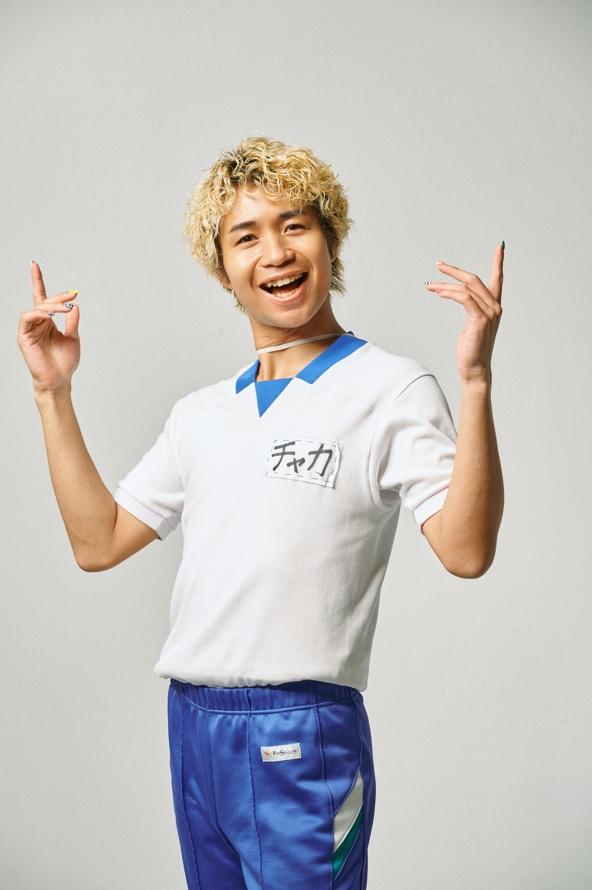
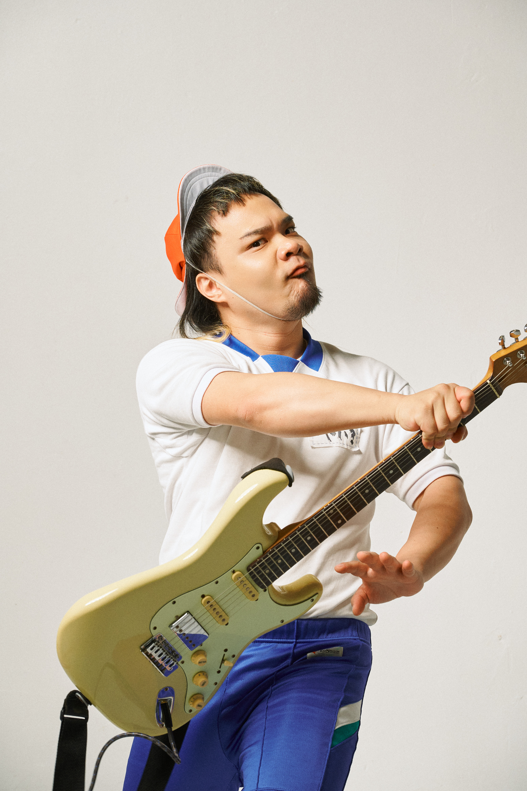
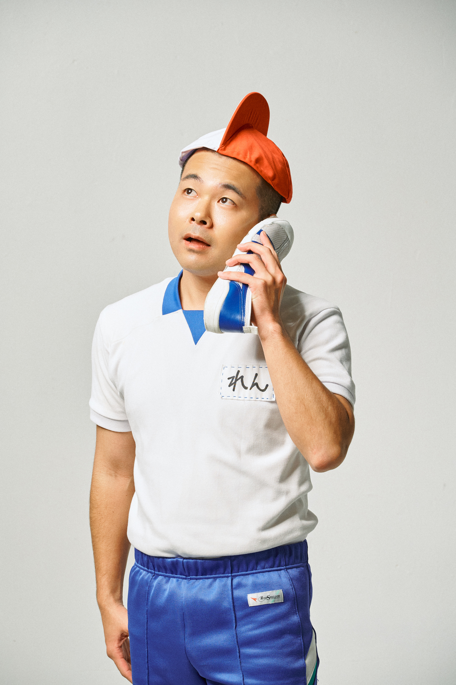
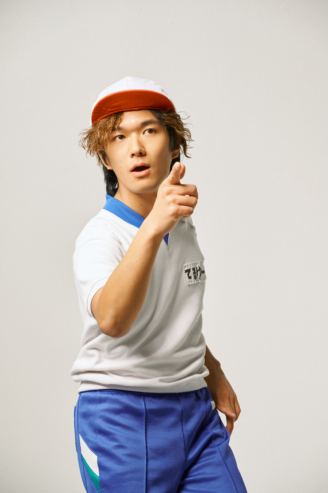

2018
浪人中のチャカともとれんが予備校で出会う。
レンは大学時代、生物講師のアルバイトをしており、先生と生徒という立場を超え、互いに生き物好きとして意気投合。予備校終わりには、原付と自転車で公園へ向かい、一緒に生き物探しをする仲だった。
PROFILE
チャカランドのプロフィールと活動概要。

沖縄発世界をHAPPYにする令和歌謡曲グループ。
ペイ / ギター、ボーカル
テルユー / ファニードラマー、ボーカル
チャカとも / リーダー、ボーカル
レン / ファニーダンサー、ボーカル、三線、グッズ制作
ハオ / アレンジ、コーラス、サポート
「令和歌謡曲」をテーマにJPOPや昭和歌謡のエッセンスを取り入れ、 みんなで合唱できるライブ演出を得意としています。
浪人中のチャカともとれんが予備校で出会う。
レンは大学時代、生物講師のアルバイトをしており、先生と生徒という立場を超え、互いに生き物好きとして意気投合。予備校終わりには、原付と自転車で公園へ向かい、一緒に生き物探しをする仲だった。
専門学校時代にハオと出会う。後輩として入学してきたチャカともから声をかけられたことをきっかけに、2人で音楽活動をスタート。2026年からは裏方として活動を支えている。
予備校時代に同期として出会っていたレンが、チャカランドへ参加。
チャカともと共通の先輩の紹介でペイと知り合う。
遊びの延長で歌謡曲テイストの楽曲制作を開始し、その流れの中でチャカランドのギタリストとして活動。自由な制作スタイルは、現在のチャカランドのサウンドや世界観にも大きくつながっている。
専門学校時代に同期として出会っていたテルユーが、チャカランドへ参加。結成以前から番組制作やクリエイティブ活動を共にしてきた仲間であり、その流れの中でファニードラマーとして活動をスタートする。
また、メンバーは個々でも幅広く活動しており、チャカともは沖縄アクターズスクールへの楽曲提供（作詞・作曲）やクリエイティブディレクション、Pay?はバンド育成、てるゆーはステージ照明演出など、それぞれの分野で才能を発揮している。
それぞれ異なる出会いと関係性を持つメンバーが、多彩なバックグラウンドを武器に、唯一無二のエンターテインメントを生み出し続けている。

リーダー / ボーカル

ギター / ボーカル

ファニーダンサー / ボーカル / 三線 / グッズ制作

ファニードラマー / ボーカル
アレンジ / コーラス / サポート